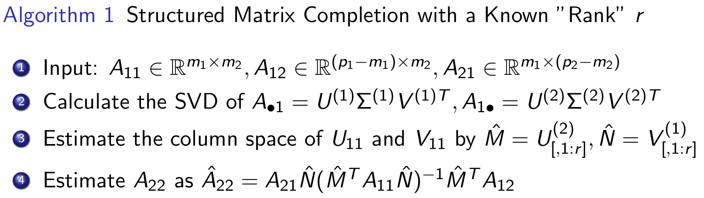
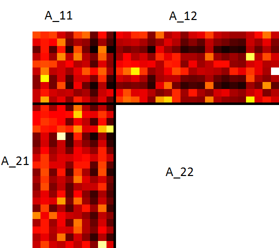
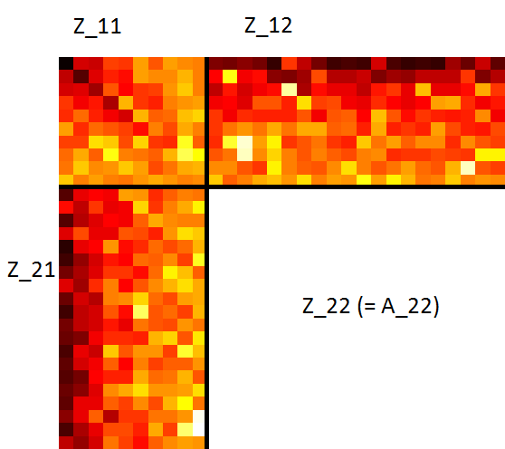
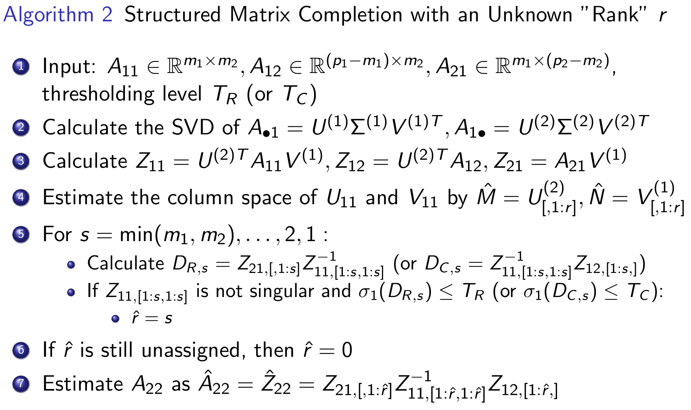

写在前面
最近看了些矩阵补全和矩阵结构化的文章，看到张老师主页上有很多这个方向的成果，下面挑了一个16年的文章。
Schur 补
给一个分块矩阵
[A11A21A12A22]
- 如果块矩阵A11可逆，则称A22−A21A11−1A12为A11的Schur 补
- 如果块矩阵A22可逆，则称A11−A12A22−1A21为A22的Schur 补
用Schur 补可得到块矩阵的逆
[A11A21A12A22]−1=[I−A22−1A210I][(A11−A12A22−1A21)−100A22−1]××[I0−A12A22−1I]
矩阵补全
当观察元素是
- 均匀随机抽样
- 独立取样但不统一
- 加权核范数最小化（已知采样分布）
- 经验加权核范数最小化（未知采样分布）
- 最大范数最小化（最小二乘）
- 结构化采样？
结构化矩阵补全
目标：给定矩阵的某些行和列来恢复整个矩阵。由于矩阵奇异值关于行、列置换具有不变性，因此可对矩阵A进行分块，给定矩阵A的部分行[A11,A12]和列[A11;A21]，求解A22。
Ap1×p2=((A11)m2×m1(A21)m2×(p1−m1)(A12)(p2−m2)×m1(A22)(p2−m2)×(p1−m1))
该补全问题如果不限制矩阵的特征，则存在无穷解。下面考虑近似低秩的先验假设。
精确低秩矩阵恢复
当矩阵A的秩为r时，记A11的奇异值分解为A11=UΣV⊺，如果
rank([A11A12])=rank([A11A21])=rank(A)=r
则rank(A11)=r，且A22可精确求解
A22=A21(A11)†A12=A21V(Σ)−1U⊺A12.
- 注意在相同条件下，核范数最小化则无法得到A22的精确解
A^22=argBmin∥∥∥∥∥[A11A21A12B]∥∥∥∥∥∗
近似低秩矩阵恢复
当矩阵A的第r个奇异值σr(A)与第r+1个奇异值σr+1(A)存在明显的差异(significant gap)，且拖尾(∑k≥r+1σkq(A))1/q特别小，则称矩阵A为近似秩r。
令分块矩阵A的奇异值分解为
A=UΣV⊺=(U11U21U12U22)(Σ100Σ2)(V11V21V12V22)⊺=(U11U21)Σ1(V11⊺V21⊺)+(U12U22)Σ2(V12⊺V22⊺)=(U11Σ1V11⊺U21Σ1V11⊺U11Σ1V21⊺U21Σ1V21⊺)+(U12Σ2V12⊺U22Σ2V12⊺U12Σ2V22⊺U22Σ2V22⊺)=U∙1Σ1V∙1⊺+U∙2Σ2V∙2⊺=Amax(r)+A−max(r)
其中，U∙k=[U1k⊺,U2k⊺]⊺,Uk∙=[Uk1,Uk2]。
已知秩r
Amax(r)可视为矩阵A的秩r近似矩阵，显然Amax(r)关于A^22的Schur 补可表示为
U21Σ1V21⊺={U21Σ1V11⊺}{U11Σ1V11⊺}−1{U11Σ1V21⊺}
因此，可以使用Amax(r)的分块矩阵U21Σ1V21⊺部分来近似计算A22。算法如下：

该算法存在以下限制：
- 需要已知秩r，这在实际应用中不可达。
- 需要计算矩阵除法（逆矩阵(M^TA11N^)−1），当矩阵近似奇异或未知矩阵秩r时存在精度问题。
未知秩r
下面给出矩阵秩r的估计r^。


若矩阵A的秩为r，则矩阵Z的第r+1行和第r+1列后面的元素都应该为0。一个秩r近似矩阵Amax(r)的自然想法就是删除矩阵Z子块矩阵元素非常小的若干行若干列。
然而，当秩未知时，我们不清楚应该删除多少行多少列合适，因此可以尝试类似枚举法，一个一个试，保证
- Z11,[1:r^,1:r^]非奇异
- ∥Z21,[1:r^,1:r^]Z11,[1:r^,1:r^]−1∥≤TR，其中TR是一个事先定义的标准
- 找到满足上面两个要求的最大秩r^作为秩r的估计。
可用删除后的Z21,[:,1:r^],Z11,[1:r^,1:r^],Z12[1:r^,:]来估计A22
A^22=Z21,[:,1:r^]Z11,[1:r^,1:r^]−1Z12,[1:r^,:]
对应的算法如下：

注意：
- Z21[:,1:r]和Z11,[1:r,1:r]分别近似于U21Σ1和Σ1
- 记DR,s=Z21,[:,1:s]Z11,[1:s,1:s]−1
- 用奇异性与范数估计秩：
- 当s>r，Z21[:,1:s]与Z11,[1:s,1:s]近似奇异，因此DR,s出现奇异或者无界的范数(singular or with unbounded norm)
- 当s=r，Z11,[1:s,1:s]非奇异，则∥DR,s∥有界
小结
该文章后面给出了两个算法的误差上、下界，补充文档给出详细的证明。
后续还会再找一些张老师的文章看看，算法简单易懂，理论就比较难懂了。🙇
文章还参考了一个外国友人做的slide，两个算法的截图来自于此。
References